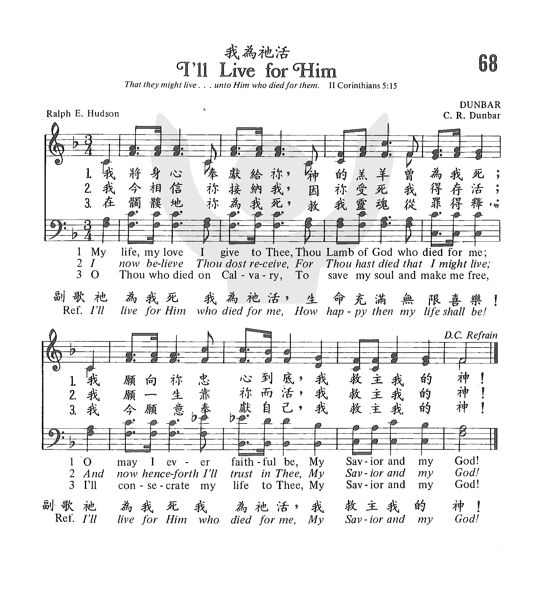

1082
Ill Live For Him
_Hudson, R. E.
我为祂活
|
|
|
|
1 My life, my love I give to Thee,
Thou Lamb of God who died for me;
O may I ever faithful be,
My Savior and my God!
Refrain:
I'll live for him who died for me,
How happy then my life shall be!
I'll live for him who died for me,
My Savior and my God!
2 I now believe thou dost receive,
For Thou hast died That I might live;
And now henceforth I'll trust in Thee,
My Savior and my God! [Refrain]
3 O Thou who died on Calvary,
To save my soul and make me free;
I'll consecrate My life to Thee,
My Savior and my God! [Refrain]
Source: African
Methodist Episcopal Church Hymnal #305
|
“068b 我為祂活 I’LL LIVE FOR HIM
我將身心奉獻給你，
神的羔羊曾為我死；
我願向袮忠心到底，
我救主我的神！
祂為我死我為祂活，
生命充滿無限喜樂！
祂為我死我為祂活，
我救主我的神！
我今相信袮接納我，
因袮受死我得存活；
我願一生靠袮而活，
我救主我的神！
祂為我死我為祂活，
生命充滿無限喜樂！
祂為我死我為祂活，
我救主我的神！
在骷髏地袮為我死，
救我靈魂從罪得釋；
我今願意奉獻自己，
我救主我的神！
祂為我死我為祂活，
生命充滿無限喜樂！
祂為我死我為祂活，
我救主我的神！
|
|
https://www.zanmeishige.com/tab/25385.html?songbook=1&index=68

|
|
|
|

I'll Live for Him - Song Lyrics with Orchestral backing music.
1082
Ill Live For Him
我为祂活
|
Short Name: |
R. E. Hudson |
|
Full Name: |
Hudson, R. E. (Ralph E.), 1842-1901 |
|
Birth Year: |
1843 |
|
Death Year: |
1901 |
Ralph Hudson (1843-1901)

was born in Napoleon, OH.
He served in the Union Army in the Civil War. After teaching for five years
at Mt. Union College in Alliance he established his own publishing company
in that city. He was a strong prohibitionist and published The Temperance
Songster in 1886. He compiled several other collections and supplied tunes
for gospel songs, among them Clara Tear Williams' "All my life long I had
panted" (Satisfied). See 101 More Hymn Stories, K. Osbeck, Grand Rapids, MI:
Kregel Publications, 1985).
Mary Louise VanDyke
Tune Information
|
Title: |
[My life, my love, I give to Thee] |
|
Composer: |
Charles R. Dunbar (1882) |
|
Meter: |
8.8.8.6 with refrain |
|
Incipit: |
53335 33351 35123 |
|
Key: |
F Major |
|
Copyright: |
Public Domain |
|
Short Name: |
C. R. Dunbar |
|
Full Name: |
Dunbar, C. R. |
|
Birth Year
(est.): |
1830 |
|
Death Year: |
1895 |
Rv Charles R
Dunbar USA 1830-1895. Born in Pulaski,NY, he became a
minister. He died in Columbus, OH.
John Perry
"I"ll LIVE FOR HIM"
"Not…live unto themselves, but unto Him which died for them" (2
Cor. 5:15)
INTRO.:
A hymn which stresses the importance of not living for ourselves but for Him who
died for us is I’ll Live for Him" (#99 in Sacred
Selections for the Church). The text was written by Ralph Erskine Hudson
(1843-1901). He is perhaps best remembered for composing the tune, with the
chorus beginning, "At the cross, at the cross, where I first saw the light," to
which we usually sing Isaac Watts’s hymn beginning, "Alas, and did my Savior
bleed?" The tune (Dunbar) for "I’ll Live for Him" was composed by Charles R.
Dunbar (19th c.). Nothing else is presently known about this composer, except
that he also provided the tune for Mary S. B. Dana Schindler’s "There’ll Be No
Sorrow There." The hymn "I’ll Live for Him" was first published in the 1882 Salvation
Echoes which Hudson edited in Alliance, OH.
Among hymnbooks published by members of the Lord’s church during the twentieth
century for use in churches of Christ, the song appeared in the 1937 Great
Songs of the Church No. 2 edited by E. L. Jorgenson; the 1935 Christian
Hymns (No. 1), the 1948 Christian
Hymns No. 2, and the 1966 Christian
Hymns No. 3 all edited by L. O. Sanderson; the 1963 Abiding
Hymns edited by Robert C. Welch; and the 1963 Christian
Hymnal edited by J. Nelson Slater. Today it may be found in
the 1971 Songs
of the Church, the 1990 Songs
of the Church 21st C. Ed., and the 1994 Songs
of Faith and Praise all edited by Alton H. Howard; the
1978/1983 Church
Gospel Songs and Hymns edited by V. E. Howard; and the 1992 Praise
for the Lord edited by John P. Wiegand; in addition to Sacred
Selections and the 2007 Sacred
Songs of the Church edited by William D. Jeffcoat. I realize
that not every hymnbook can contain every hymn that everyone likes, but I miss
this song in Hymns
for Worship.
The song expresses the response of one who fully realizes what the death of
Jesus means for him.
I. Stanza 1 says that we must be faithful to Jesus
"My life, my love I give to Thee, Thou Lamb of God who died for me;
O may I ever faithful be, My Savior and my God."
A. We should give Jesus our lives and love by loving Him with all our heart,
soul, and mind: Matt. 22:37-38
B. The reason is that He is the Lamb of God who redeemed us by His blood: 1
Pet. 1:18-19
C. Therefore, we should be faithful unto Him even until death: Rev. 2:10
II. Stanza 2 says that we must trust in Jesus
"I now believe Thou dost receive, For Thou hast died that I might live;
And how henceforth I’ll trust in Thee, My Savior and my God."
A. Christ will receive us, but we must believe in Him: Jn. 8:24
B. One thing that we need to believe is that He died that we might live: 1 Cor.
15:1-3
C. Therefore, for salvation and for our entire lives we must trust Him: Eph.
1:12-13
III. Stanza 3 says that we must consecrate our lives for Jesus
"O Thou who died on Calvary To save my soul and make me free,
I’ll consecrate my life to Thee, My Savior and my God."
A. Jesus died on Calvary or Golgotha: Jn. 19:17-18
B. The purpose for which He did this was to save our souls from sin: Matt. 1:21
C. Therefore, we should consecrate our lives to Him by being crucified with Him
and then living by faith in Him: Gal. 2:20
CONCL.:
The chorus express the desire to live for the one who died for us.
"I’ll live for Him who died for me; How happy then my life shall be!
I’ll live for Him who died for me, My Savior and my God!"
Notice that while the main thrust of the song is to encourage us to live for
Jesus, each stanza specifically mentions that Jesus died for us. Some of
our books have only two stanzas, and some denominational books in my collection
have no chorus but make the chorus stanza 4. Either way, when I remember all
that Jesus did for me by His death on the cross to provide salvation from sin,
I’m more and more resolved that "I’ll Live for Him."
https://hymnstudiesblog.wordpress.com/2009/11/06/quoti039ll-live-for-himquot/
Words: Ralph Erskine Hudson (b. July 12, 1843; d.
June 14, 1901)
Music: C. R. Dunbar (19th century)
Links:
Wordwise Hymns
The Cyber Hymnal
Note: This gospel song was first published in 1882. There’s no further
information currently available on Dunbar. One source gives his first
name as Charles, but the Cyber Hymnal lists Charles W.
Dunbar as a separate individual.
Ralph Hudson worked as a male nurse in a Union hospital, during the
American Civil War. He went on to serve with the Methodists as an
evangelist, and a singer and song writer, as well as a compiler and
editor of sacred music. He established his own publishing company in
Ohio.
Most of his own songs are light repetitious fare (though not necessarily
unbiblical). Further, he sometimes tinkered with great hymns of the
past, giving them a new tune and a refrain. In the Wordwise Hymns link,
I’ve expressed my disfavour with his transformation of Isaac Watts’
moving Alas,
and Did My Saviour Bleed? into At
the Cross, with its trite refrain.
The present hymn is typical of Hudson. And it’s repetition is
more pronounced, not only because of the sixfold repetition of “My
Saviour and My God” (counting the refrains), but because of the melody.
The refrain simply reuses the tune written for the stanzas. (That’s a
dozen reiterations of the musical ta-DUM-tee dum that begins each line!)
However, these things being said, the simple words of the song do
express some significant truths. Perhaps, being simple, it sticks in the
memory more easily (though I’d have made CH-1 the third stanza,
so the progression is more logical). That is:
1) “I now believe Thou dost receive…”
2) “I’ll consecrate my life to Thee…”
3) “O may I ever faithful be…”
Consider some of the significant truths we have in this simple song.
1) Christ is the Lamb of God who died for us (Jn. 1:29). His purpose
was “to save my soul and set me free” (CH-3). “For you, brethren,
have been called to liberty” (Gal. 5:13).
2) He graciously receives those who come to Him in faith. “This Man
receives sinners (Lk. 15:2; cf. Jn. 5:37, 44; 10:14, 16).
3) We cannot pay for grace, or it wouldn’t be grace (Rom. 4:4-5).
However, the love of Christ summons a loving response in
return. “We love Him because He first loved us” (I Jn. 4:10, 19; cf.
Lk. 7:47).
4) Our proper response to all the Lord has done for us is to commit
all we are and have to Him, and to live for Him and serve Him. “I
beseech [plead with you] therefore,
brethren…” (Rom. 12:1-2; cf. Eph. 4:1; I Thess. 4:1).
5) By the grace of God, we’re to walk by faith (II Cor. 5:7) and, as
He enables, we can “ever faithful be” (CH-1), living out our
dedication, day by day. “The life which I know live in the flesh I
live by faith in the Son of God, who loved me and gave Himself for
me” (Gal. 2:20).
6) “How happy then my life shall be” (refrain), says Hudson. I’d
make it a little stronger than happiness (which is an emotional
response to happen-ings).
There’s abounding joy and blessing in living for Christ. His purpose
in coming was so that we could have abundant life (Jn. 10:10), and
we can. “The kingdom of God is not eating and drinking, but
righteousness and peace and joy in the Holy Spirit” (Rom. 14:17; cf.
15:13).
CH-1) My life, my love I give to Thee,
Thou Lamb of God who died for me;
O may I ever faithful be,
My Saviour and my God!
I’ll live for Him who died for me,
How happy then my life shall be!
I’ll live for Him who died for me,
My Saviour and my God!
CH-3) O Thou who died on Calvary,
To save my soul and make me free,
I’ll consecrate my life to Thee,
My Saviour and my God!
Questions:
1) Do you see merit in using a song like this with a congregation? (If
so, what are its benefits?)
2) What other dedication hymns do you know that are richer in expression
and/or doctrinal depth?
Links:
Wordwise Hymns
The Cyber Hymnal
https://wordwisehymns.com/2013/05/20/ill-live-for-him/